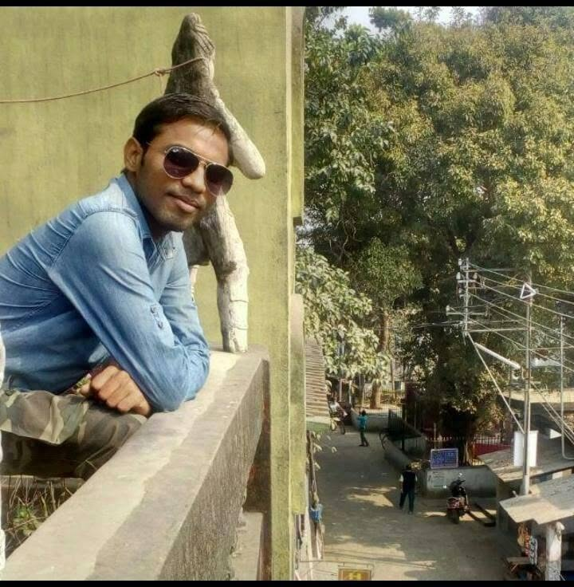

AI / Agentic AI | Machine Learning | Deep Learning
📧 tathagatanath01@gmail.com
📧 tathagatallm@gmail.com
📞 +91-9674145258
📍 Kolkata, West Bengal
Computer Science professional with an M.Tech in Computer Science & Engineering and hands-on project experience in Agentic AI, Machine Learning, Deep Learning, and Data Analysis. Skilled in Python, LangChain, LangGraph, NumPy, Pandas, SQL, ANN/CNN, and Machine Learning Regression and Classification. Experienced in developing prediction systems and AI-powered applications. Published research in Wireless Sensor Networks and experienced in web design and scientific review activities.
I have more than 5 years of career gap, but I am highly motivated to return to the professional workforce and contribute my technical skills in AI, Machine Learning, Deep Learning, and Data Science.
Aliah University, Kolkata, West Bengal
CGPA: 8.63 | 2019
Aliah University, Kolkata, West Bengal
CGPA: 7.67 | 2016
Manbazar R.M.I | WBCHSE
Percentage: 60% | 2010
Manbazar R.M.I | WBBSE
Percentage: 74.63% | 2007
AI-powered used-car price and purchase recommendation system combining Machine Learning regression with Generative AI and web research.
Built a regression pipeline using vehicle attributes such as brand, age, mileage, engine capacity, fuel type, transmission, ownership history, and location.
Integrated FastAPI, LangGraph, Groq LLM and DuckDuckGo Search for price prediction, web research and AI-driven BUY / CONSIDER / AVOID recommendations.
🚗 Live Demo GitHubAI-powered travel planning system using LangGraph and LLM orchestration to generate end-to-end travel itineraries.
Integrated AviationStack API for flight data and Tavily Search for hotel recommendations and contextual travel suggestions.
🌍 Live Demo GitHubReal-time AI question answering system using Groq LLM, LangChain and DuckDuckGo Search to retrieve and process up-to-date web information.
Developed an interactive Streamlit application enabling users to ask open-domain questions and receive concise, context-aware answers.
🚀 Live Demo GitHubAI-powered financial market analysis system using LangChain and Groq LLM to analyze Indian stocks, US stocks and mutual funds.
Integrated financial APIs and tool-based agent orchestration to generate structured market insights.
📊 Live App GitHubAgentic AI Weather and City Information Assistant using LangChain and Qwen3-32B.
Integrated WeatherAPI, DuckDuckGo Search and SQLite checkpointing for live data retrieval and persistent agent state.
Developed and deployed an interactive Streamlit application with secure API-key management.
🌤️ Live App GitHubLLM-powered ATS Resume Screening system using Python, LangChain, Groq LLM, Streamlit and PyPDF.
Analyzes PDF resumes and generates structured insights including skills, education, experience, projects, skill gaps and recruiter recommendations.
Implemented structured JSON generation and prompt engineering to improve consistency and reduce hallucination.
📄 Live Demo GitHubDeep learning project using Convolutional Neural Networks for retinal image detection related to diabetes prediction.
GitHubMachine Learning regression model for Bengaluru house price prediction.
🏠 Live DemoMachine Learning classification project for breast cancer prediction using Python.
GitHubCreazione Production, Kolkata
June 2016 – November 2017
Worked on website design and related web-development activities for the organization using WordPress.
M.Tech research project on applying wireless sensor networks for rhino monitoring against poaching in Kaziranga National Park.
Technology: MATLAB
📄 Research PaperM.Sc research project on offline Urdu signature identification.
Technology: MATLAB
Tathagata Nath, Md Azharuddin
AEU – International Journal of Electronics and Communications (Elsevier), Volume 111, 2019.
SCI Journal | Impact Factor: 3.1
📄 Research PaperAutomatic Postal Kiosk
Best Startup Idea presented at the International Conference on Frontiers in Computing and Systems, Springer.
CertificateContributed as a reviewer for the International Journal of Electrical and Computing Engineering (Scopus).
CertificateReturning to the professional workforce and seeking opportunities to apply and further develop my skills in Artificial Intelligence, Machine Learning, Deep Learning, Agentic AI and Data Science.